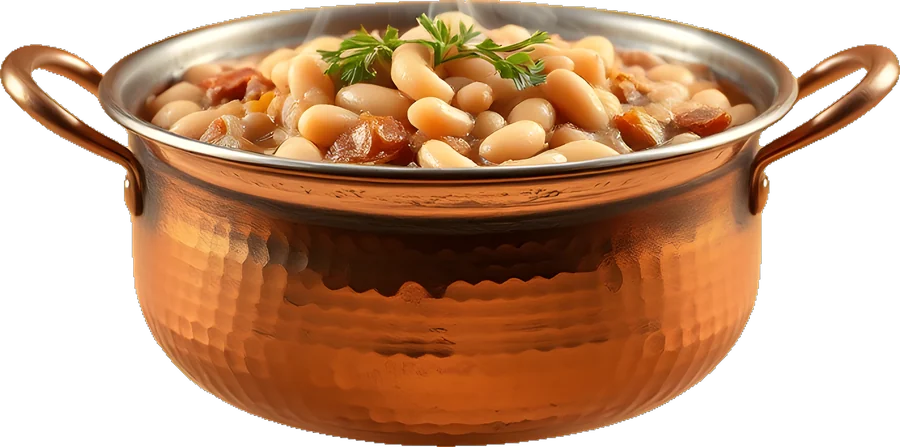
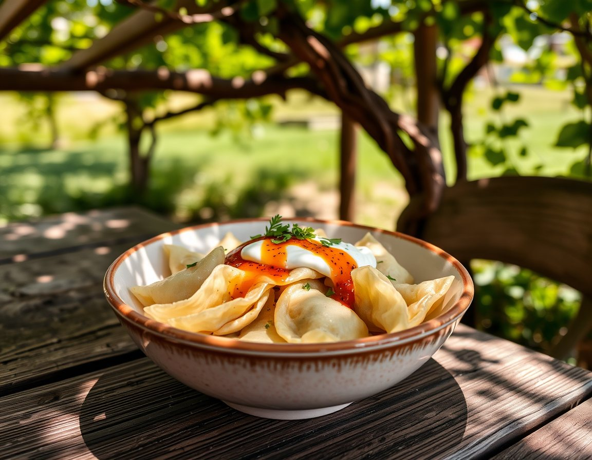
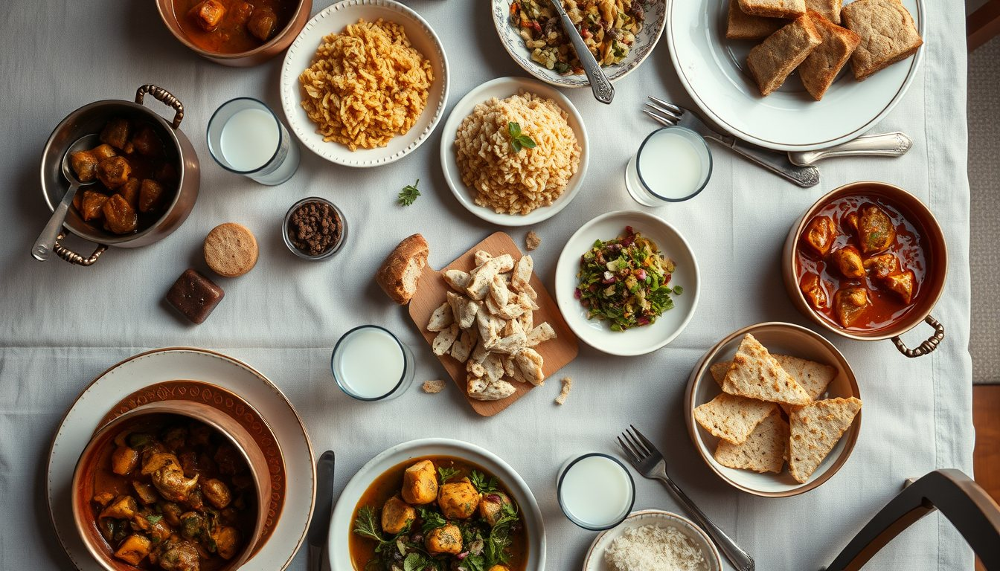
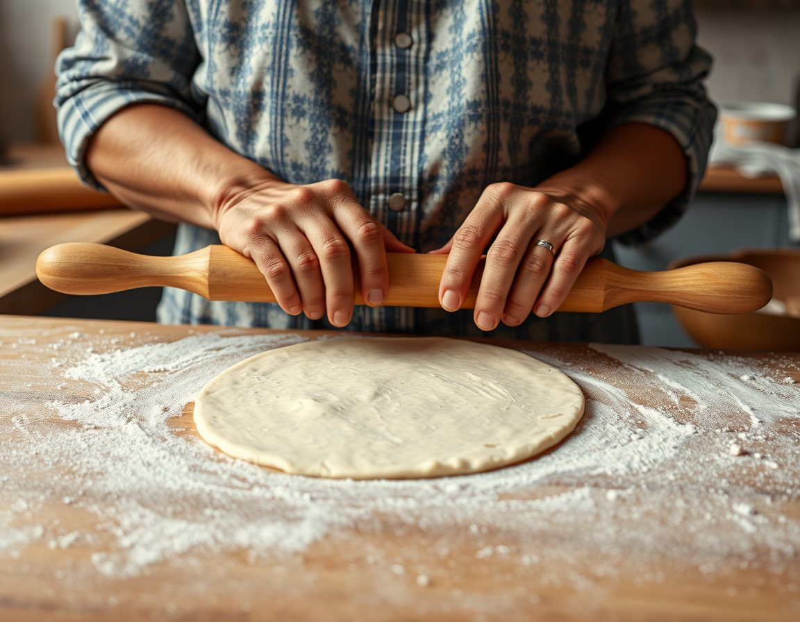
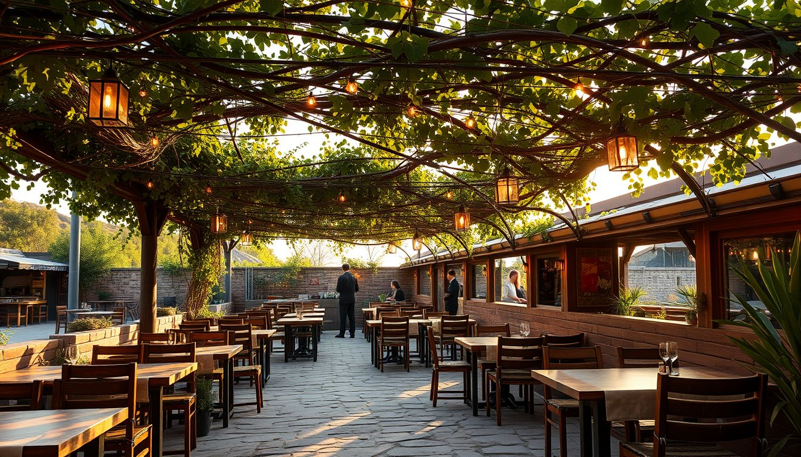

Her sabah 06:00'da ocağa konan, öğlene kadar kısık ateşte pişen tencere yemekleri. Asmanın gölgesinde ya da evinizde, sıcak sıcak.

Tencereler tükenene kadar. Öğleden sonra için telefonla ayırtabilirsiniz.


Aile yemekleri, iş yemekleri, mevlit ve kutlamalar için 40 kişiye kadar toplu menü hazırlıyoruz.

“Tencereyi kısık ateşe koyarsın, sabrı da yanına. Gerisini zaman halleder.”
— Ayşe Hanım, mutfağın sahibi
1991'de dört masayla başladık. Bugün hâlâ aynı tarifler, aynı bakır tencereler ve aynı asmanın altındayız.

Merkezefendi ve Pamukkale içinde kendi kuryemizle. Toplu siparişleri bir gün önceden alıyoruz.
WhatsApp'tan sipariş ver